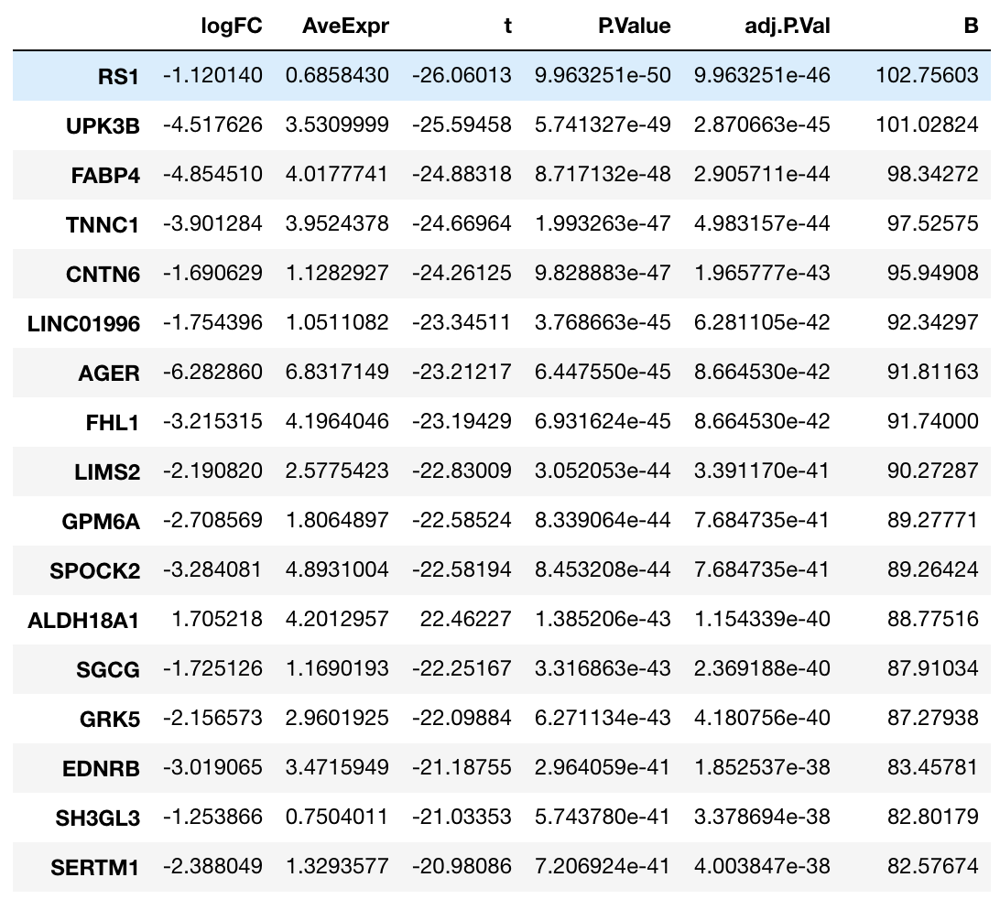

基本散点图展示
应用场景
heatmap运用的地方比较多，能够展示的信息也非常丰富，常用的就是展示基因在不同组别样本中的表达情况。
利用limma包做一个差异表达分析
rt <- read.table(file = "/Users/stead/Documents/SourceTree/gitbook/R_visualization/data/LUAD_test.txt",
header = TRUE, row.names = 1, stringsAsFactors = FALSE)
#heatmap 在差异表达基因可以显示的更有层次，那这里我们简单的做一个差异分析，用heatmap展示差异表达基因
library(limma)
#构建一个phenotype的文件标示出各个样本tumor和normal属性
rt_sam_m <- data.frame(cbind(colnames(rt), c(rep('Tumor', 57), rep('Normal', 57))), stringsAsFactors = FALSE)
colnames(rt_sam_m) <- c('samples_id', 'group')
m_group = factor(rt_sam_m$group, levels=c('Tumor', 'Normal'))
design_m = model.matrix(~0 + m_group)
row.names(design_m) <- rt_sam_m$samples_id
colnames(design_m) <- c('Tumor','Normal')
#差异分析
m_fit <- lmFit(rt, design_m)
cont.matrix <- makeContrasts(TumorvsNormal = Tumor-Normal, levels = design_m)
m_fit2 <- contrasts.fit(m_fit, cont.matrix)
m_fit3 <- eBayes(m_fit2)
rt_diff <- topTreat(m_fit3, number = length(row.names(rt)))
rt_diff2 <- rt_diff[which(abs(rt_diff$logFC) > 1 & rt_diff$P.Value < 0.05), ]
dim(rt_diff2)#798 6, 有798个差异基因
rt_diff2数据形式如下图所示

利用heatmap.2做heatmap
#作为实例数据，对上述前100个基因做heatmap
library(gplots)
rt_ht <- rt[row.names(rt_diff2)[order(abs(rt_diff2$logFC), decreasing = TRUE)[1:100]], ]#取出前100的DEGs
mat_ht <- as.matrix(apply(rt_ht, 2, function(x){as.numeric(x)}))
mat_ht_z <- apply(mat_ht, 2, FUN = function(x){(x-median(x))/sd(x)})
row.names(mat_ht_z) <- row.names(rt_ht)
heatmap.2(mat_ht_z, col = colorpanel(99, "blue", "black", "red"), dendrogram = "both", keysize = 1,
hclustfun = function(x){hclust(x, method = 'ward.D2')}, trace = "none", density.info = "none")
#显示tumor和normal标示
heatmap.cols <- c(rep('red', 57), rep('blue', 57))
#ColSideColors设置分组的ColSide
heatmap.2(mat_ht_z, col = colorpanel(99, "blue", "black", "red"), dendrogram = "both", keysize = 1,
hclustfun = function(x){hclust(x, method = 'ward.D2')}, trace = "none", density.info = "none",
ColSideColors = heatmap.cols)


#选择row或者col是否聚类
#Colv = T, Rowv = F
heatmap.2(mat_ht_z, col = colorpanel(99, "blue", "black", "red"), dendrogram = "both", keysize = 1,
hclustfun = function(x){hclust(x, method = 'ward.D2')}, trace = "none", density.info = "none",
ColSideColors = heatmap.cols, Colv = F, Rowv = T)
#可以labs都去掉
#labRow = NA, labCol = NA
heatmap.2(mat_ht_z, col = colorpanel(99, "blue", "black", "red"), dendrogram = "both", keysize = 1,
hclustfun = function(x){hclust(x, method = 'ward.D2')}, trace = "none", density.info = "none",
ColSideColors = heatmap.cols, Colv = F, Rowv = T, labRow = NA, labCol = NA)
#加上legend来标示tumor 和Normal
heatmap.2(mat_ht_z, col = colorpanel(99, "blue", "black", "red"), dendrogram = "both", keysize = 1,
hclustfun = function(x){hclust(x, method = 'ward.D2')}, trace = "none", density.info = "none",
ColSideColors = heatmap.cols, Colv = F, Rowv = T, labRow = NA, labCol = NA)
legend('topleft', legend = c('tumor', 'normal'), pch = 15, bty = 'n', col = c('red', 'blue'), text.col = "black")